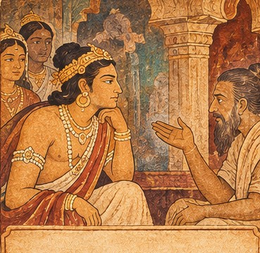

Episode 01

Explore a story of courage, endurance and renunciation, associated with the celebrated narrative paintings of Ajanta. Move through the episodes, discover their meaning and test what you have learned.
The Ajanta Caves in Maharashtra are a group of Buddhist rock-cut monuments renowned for their monasteries, prayer halls, sculpture and mural paintings. The paintings use expressive figures, gestures, costumes and settings to communicate stories and moral ideas.
This digital storyboard presents the Mahajanaka Jataka, a story from the previous-life narratives of the Buddha. The episodes below are a learning retelling, not a claim to reproduce every detail or sequence of the original wall painting.

Mahajanaka’s struggle at sea represents determination in the face of overwhelming difficulty.
His experiences lead him to reflect on the limits of wealth, status and sensory pleasure.
Leaving royal life symbolises the search for a deeper purpose beyond power and possessions.